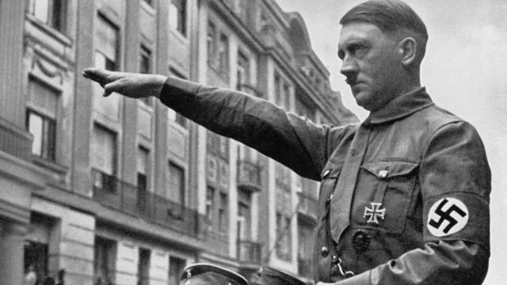

¿Qué es el Holocausto?
Durante la Segunda Guerra Mundial, los nazis asesinaron a casi seis millones de judíos europeos. Este genocidio es conocido con el nombre de Holocausto. Aquí puedes leer sobre las causas, los antecedentes y las fases en las cuales se desarrolló el Holocausto y quiénes fueron sus autores.
Los términos Holocausto y Shoah
El término holocausto proviene del griego antiguo y significa «quemarlo todo». Antes de la Segunda Guerra Mundial, esta palabra era ya, en ocasiones, utilizada para describir la muerte de un gran grupo de personas, pero desde 1945 se ha convertido casi en sinónimo del asesinato de judíos europeos durante la Segunda Guerra Mundial. Por eso, utilizamos el término «el Holocausto», con mayúscula. Los judíos también utilizan el término: Shoah, que en hebreo significa «catástrofe».
Causas del Holocausto
Se pueden mencionar diferentes motivos del Holocausto. La causa más directa es que los nazis pretendían erradicar a los judíos y tuvieron la posibilidad de hacerlo. Aunque su espíritu asesino no surgió de la nada. La ideología antisemita nazi debe entenderse en un contexto más amplio, de siglos de hostilidad hacia los judíos, racismo y nacionalismo moderno.
En 1918 Alemania perdió la Primera Guerra Mundial y los extremistas de derecha culparon a los judíos por la deuda generada en la guerra. Además, acusaron a los judíos de ser explotadores capitalistas, beneficiándose a costa de otros. Al mismo tiempo, los judíos fueron considerados también partidarios del comunismo. Y, a través de una revolución, tendrían planeado tomar el poder mundial.
Expulsión de los judíos de Alemania
En el período de 1933 a 1939, los nazis le hicieron cada vez más imposible la vida a los judíos en Alemania. Los judíos son víctimas de discriminación, exclusión, robo y violencia. Los nazis, por lo general, también asesinaban a judíos, aunque no de una manera sistemática o con la intención de matar a todos los judíos en general.
La decisión de genocidio
El asesinato en masa es una alternativa extrema a los planes anteriores de deportación. La guerra convierte casi en imposible la idea de deportar judíos a Madagascar. El plan para expulsar a los judíos más hacia el este de Europa también resulta impracticable, pues no hay aún una victoria sobre la Unión Soviética. Y, por lo tanto, la «solución final de la cuestión judía» toma la forma de un genocidio. El 20 de enero de 1942, en la Conferencia de Wannsee, funcionarios nazis discuten la ejecución del plan de asesinato de los once millones de judíos vivos en Europa.
Operación Reinhard (Aktion Reinhard)
Bajo el nombre clave de Operación Reinhard (Aktion Reinhard), los nazis construyen varios campos de exterminio: Belzec, Sobibor y Treblinka. En ellos, las víctimas son asesinadas inmediatamente después de su llegada, en las cámaras de gas con las emisiones de motores diésel.
¿Quiénes fueron los responsables?
Las principales responsables del Holocausto fueron los nazis, quienes planearon y llevaron a cabo la masacre genocida. Aunque sin el apoyo y la ayuda de millones de ciudadanos alemanes y otras personas, nunca podrían haberlo hecho. La población protestó muy poco, aunque cabe señalar que el Tercer Reich era una dictadura, donde la gente no podía expresarse libremente. Los aliados de la Alemania nazi eran culpables, en muchos casos, de asesinar ellos mismos a judíos o deportarlos a Alemania nazi.
¿Quiénes sabían acerca del Holocausto?
Desde 1942, en las naciones aliadas se hablaba sobre el asesinato de los judíos, pero el conocimiento del tema era limitado. Esto se debía, en parte, porque la noticia provenía de segundas o terceras fuentes y con gran retraso alcanzaba el otro lado del océano. Además, los crímenes nazis fueron tan aberrantes que pocos podían habérselos imaginado y los mensajes eran considerados exagerados. Solamente cuando los aliados liberaron los campos de concentración y exterminio, el mundo se dio cuenta del crimen que se había cometido.